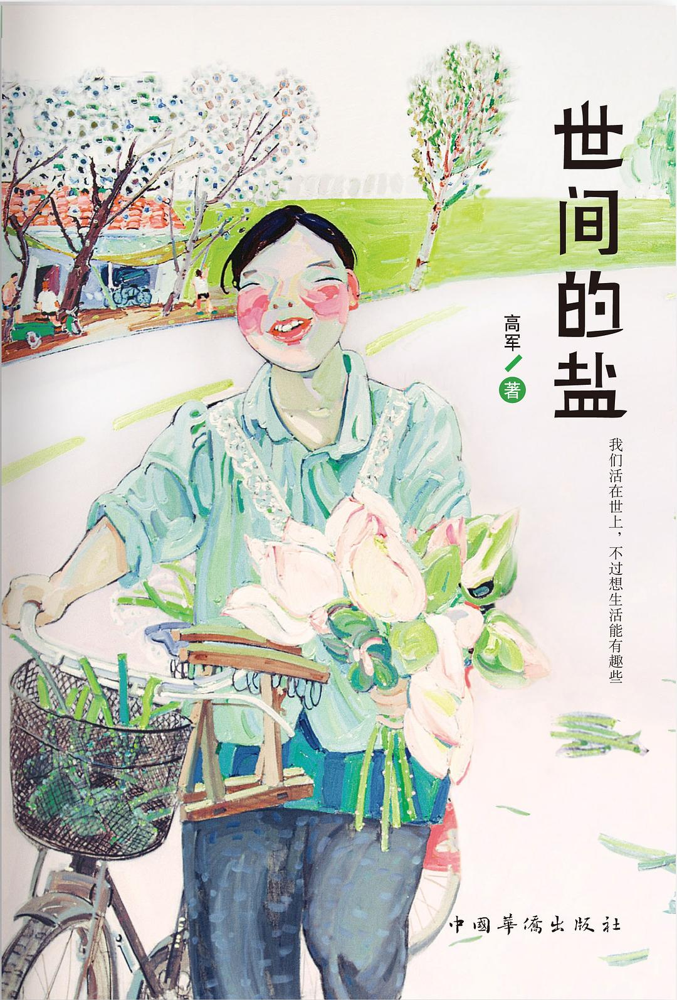

世间的盐

8.3
★★★★☆
豆瓣评分 · 14,200 人评价
网络传奇作家高军（风行水上）的平民世情画卷，以古雅冲淡又妙趣横生的笔触，摹写老城草莽、街坊闲汉、饮食烟火与世道人心。
总体观点
《世间的盐》是画家、作家高军（网名‘风行水上’）的一部独树一帜的市井生活美学散文集。作者生长于安徽老合肥的小街陋巷，以惊人的记忆力与如椽大笔，复活了二十世纪后半叶那些早已消逝在现代化推土机下的旧式平民生活风貌与市井江湖。
书名取自《新约》中‘你们是世间的盐’之意，在高军笔下，这些被大历史遗忘的鞋匠、篾匠、茶客、跑江湖的异人与弄堂里的老妪，正是调和人间滋味、维系民间道义与生活热气的真正‘盐分’。其文字洗练白描，化用明清笔记小品笔意，既有周作人、汪曾祺式的雅致冲淡，又具江湖市井的野蛮生猛与悲悯温度。
核心观点
-
1. 平民微光：小人物身上朴素的尊严与生命力
在物质匮乏、动荡跌宕的岁月里，底层劳动者依靠一身手艺与互助道义，展现出坚韧不拔的生存智慧与体面。
走街串巷的锢炉匠即使吃不饱饭，也把工具箱擦得锃亮，给穷苦人家补锅从不多收一文，自有一副江湖信义。 -
2. 民间饮食中的烟火深情与岁月厚味
真正的美味不在奢华酒楼的燕鲍翅参，而在于老茶馆里的一碗干丝、巷子深处的一锅卤鸭与冬日炉火上的热汤。
书中写寒冬腊月街坊邻里围着炭火铜锅涮羊肉，老酒温热，热气氤氲了斑驳的窗玻璃，勾勒出尘世最温暖的慰藉。 -
3. 旧式手艺与生活器物的消逝挽歌
工业化流水线抹平了手工制品的温润与个性，那些凝聚着时光与匠人脾性的老物件，成了记忆中的琥珀。
老木匠耗费数月为新娘打造的红木雕花大床，每一根榫卯严丝合缝不用一根铁钉，承载着数代人的家族温情。 -
4. 市井江湖里的奇人轶事与世道人心
民间并非愚昧落后之地，巷陌之中藏龙卧虎，老百姓以评书、酒话和掌故构建了一套独立于官方话语的道德评判标准。
写茶馆里的说书先生肚里装着半部野史，借古讽今针砭时弊，满座茶客心领神会，在哄堂大笑中宣泄现实块垒。 -
5. 世间的盐：调和粗粝苦难的人间温情
生活原本粗粝苦涩，唯有邻里间的善意、长幼间的体恤与对琐碎生活的热爱，才能将日子腌渍出醇厚的甜味。
困难时期邻家大娘偷偷送来的一小碗白面疙瘩汤，救活了病弱的孩子，成为作者一生无法忘怀的人间至味。
全书结构
-
第一辑 旧时风物：消逝的手艺与作坊
记叙铁匠铺、裱画庄、竹器作坊等传统手工业态，摹写老匠人的专注与规矩。
铁匠师傅在炉火熊熊前挥动铁锤，火星四溅中锻造农具，以声响和火候判断钢性的纯熟技艺令人叹服。 -
第二辑 街坊草莽：巷陌深处的奇人百态
记录合肥老城里的各色平民面孔，包括隐姓埋名的武术高手、幽默乐观的看门大爷与坚韧持家的寡妇。
老裁缝平日少言寡语，裁剪布料时目测如尺分毫不差，文革中悄悄替邻居改制旧衣救急度日。 -
第三辑 饮食滋味：茶肆酒肆的舌尖风霜
聚焦皖中地区的乡土美食、早茶文化与市井小吃，将吃食与人情往来深度交织。
清晨五点茶馆开门，老茶客们自带茶叶聚在八仙桌旁品评市井见闻，一碗鳝丝面吃出人间清福。 -
第四辑 岁时草木：四季流转中的民间闲趣
从春水煎茶到冬日捕鱼，描写中国传统节令民俗与大自然在乡村城镇间留下的印记。
端午采艾、重阳酿酒，寻常人家顺应天时劳作休憩，展现了中国农耕文明沉淀下的从容生活节奏。 -
第五辑 江湖行脚：走南闯北的见闻录
作者早年学画游历大江南北的奇遇与风土人情，在更辽阔的地理空间中体察世道苍凉与民间坚韧。
在偏僻山村借宿古庙，遇上避世修行的老僧促膝长谈，在晨钟暮鼓中感悟生命如微尘草木般的自然真理。